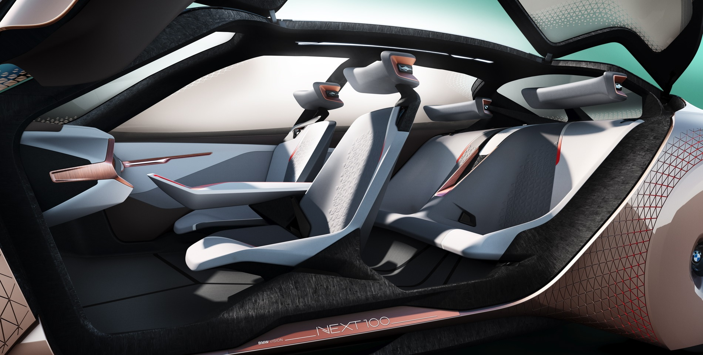

Voiture BMW Vision Next
Les nouvelles technologies font de nos rêves une réalité. Avec BMW, nous avons créé un concept hors du temps. La voiture autonome.
Électrique et futuriste, nous vous dévoilons notre toute nouvelle voiture. Avec l’aspect d’une BMW, cette berline ravira
vos yeux. Les ingénieurs de Transport My Mind, ont proposé à BMW, la maquette d’une voiture moderne, luxueuse, et autonome.
D’un premier coup d’oeil, vous pouvez vous apercevoir que les roues sont dissimulées sous le capot de la voiture. L’idée
était de concevoir une voiture avec un meilleur aérodynamisme. Une voiture classique est à 0,30 cx (coefficient de traînée), notre voiture a battu tous les records en atteignant 0,18cx. Avec son moteur complètement électrique, la voiture est
aussi zéro émission.
Mais cette voiture cache un secret. Elle est autonome. Avec ses multiples capteurs, elle permet une vision globale de la route et des trottoirs. En ville, elle peut être autonome,
ou être conduite manuellement. Avec son intelligence connectée, elle communique avec les voitures qui l’ entoure, ce qui diminue largement les accidents. La voiture détecte toutes les situations dangereuses, comme un piéton qui veut traverser
par exemple. Ses informations sont envoyées au conducteur grâce à son pare-brise écran.
Elle est aussi très confortable. Les sièges ont été revisités. Recouverts de cachemire et en forme de coquille, les quatre sièges sont individuels.
Pour la touche esthétique, nous avons proposé une idée de portes à ouvertures antagonistes, très pratiques quand les places de stationnement sont petites.